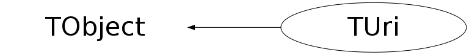

Function Members (Methods)
public:
| TUri() | |
| TUri(const TUri& uri) | |
| TUri(const TString& uri) | |
| TUri(const char* uri) | |
| virtual | ~TUri() |
| void | TObject::AbstractMethod(const char* method) const |
| virtual void | TObject::AppendPad(Option_t* option = "") |
| virtual void | TObject::Browse(TBrowser* b) |
| static TClass* | Class() |
| virtual const char* | TObject::ClassName() const |
| virtual void | TObject::Clear(Option_t* = "") |
| virtual TObject* | TObject::Clone(const char* newname = "") const |
| virtual Int_t | TObject::Compare(const TObject* obj) const |
| virtual void | TObject::Copy(TObject& object) const |
| virtual void | TObject::Delete(Option_t* option = "")MENU |
| virtual Int_t | TObject::DistancetoPrimitive(Int_t px, Int_t py) |
| virtual void | TObject::Draw(Option_t* option = "") |
| virtual void | TObject::DrawClass() constMENU |
| virtual TObject* | TObject::DrawClone(Option_t* option = "") constMENU |
| virtual void | TObject::Dump() constMENU |
| virtual void | TObject::Error(const char* method, const char* msgfmt) const |
| virtual void | TObject::Execute(const char* method, const char* params, Int_t* error = 0) |
| virtual void | TObject::Execute(TMethod* method, TObjArray* params, Int_t* error = 0) |
| virtual void | TObject::ExecuteEvent(Int_t event, Int_t px, Int_t py) |
| virtual void | TObject::Fatal(const char* method, const char* msgfmt) const |
| virtual TObject* | TObject::FindObject(const char* name) const |
| virtual TObject* | TObject::FindObject(const TObject* obj) const |
| const TString | GetAuthority() const |
| virtual Option_t* | TObject::GetDrawOption() const |
| static Long_t | TObject::GetDtorOnly() |
| const TString | GetFragment() const |
| const TString | GetHierPart() const |
| const TString | GetHost() const |
| virtual const char* | TObject::GetIconName() const |
| virtual const char* | TObject::GetName() const |
| virtual char* | TObject::GetObjectInfo(Int_t px, Int_t py) const |
| static Bool_t | TObject::GetObjectStat() |
| virtual Option_t* | TObject::GetOption() const |
| const TString | GetPath() const |
| const TString | GetPort() const |
| const TString | GetQuery() const |
| const TString | GetRelativePart() const |
| const TString | GetScheme() const |
| virtual const char* | TObject::GetTitle() const |
| virtual UInt_t | TObject::GetUniqueID() const |
| const TString | GetUri() const |
| const TString | GetUserInfo() const |
| virtual Bool_t | TObject::HandleTimer(TTimer* timer) |
| Bool_t | HasAuthority() const |
| Bool_t | HasFragment() const |
| virtual ULong_t | TObject::Hash() const |
| Bool_t | HasHierPart() const |
| Bool_t | HasHost() const |
| Bool_t | HasPath() const |
| Bool_t | HasPort() const |
| Bool_t | HasQuery() const |
| Bool_t | HasRelativePart() const |
| Bool_t | HasScheme() const |
| Bool_t | HasUserInfo() const |
| virtual void | TObject::Info(const char* method, const char* msgfmt) const |
| virtual Bool_t | TObject::InheritsFrom(const char* classname) const |
| virtual Bool_t | TObject::InheritsFrom(const TClass* cl) const |
| virtual void | TObject::Inspect() constMENU |
| void | TObject::InvertBit(UInt_t f) |
| virtual TClass* | IsA() const |
| Bool_t | IsAbsolute() const |
| static Bool_t | IsAuthority(const TString&) |
| virtual Bool_t | TObject::IsEqual(const TObject* obj) const |
| virtual Bool_t | TObject::IsFolder() const |
| static Bool_t | IsFragment(const TString&) |
| static Bool_t | IsHierPart(const TString&) |
| static Bool_t | IsHost(const TString&) |
| static Bool_t | IsIpv4(const TString&) |
| Bool_t | TObject::IsOnHeap() const |
| static Bool_t | IsPath(const TString&) |
| static Bool_t | IsPathAbempty(const TString&) |
| static Bool_t | IsPathAbsolute(const TString&) |
| static Bool_t | IsPathEmpty(const TString&) |
| static Bool_t | IsPathNoscheme(const TString&) |
| static Bool_t | IsPathRootless(const TString&) |
| static Bool_t | IsPort(const TString&) |
| static Bool_t | IsQuery(const TString&) |
| Bool_t | IsReference() const |
| static Bool_t | IsRegName(const TString&) |
| Bool_t | IsRelative() const |
| static Bool_t | IsRelativePart(const TString&) |
| static Bool_t | IsScheme(const TString&) |
| virtual Bool_t | IsSortable() const |
| static Bool_t | IsUnreserved(const TString& string) |
| Bool_t | IsUri() const |
| static Bool_t | IsUserInfo(const TString&) |
| Bool_t | TObject::IsZombie() const |
| virtual void | TObject::ls(Option_t* option = "") const |
| void | TObject::MayNotUse(const char* method) const |
| static const TString | MergePaths(const TUri& reference, const TUri& base) |
| void | Normalise() |
| virtual Bool_t | TObject::Notify() |
| void | TObject::Obsolete(const char* method, const char* asOfVers, const char* removedFromVers) const |
| static void | TObject::operator delete(void* ptr) |
| static void | TObject::operator delete(void* ptr, void* vp) |
| static void | TObject::operator delete[](void* ptr) |
| static void | TObject::operator delete[](void* ptr, void* vp) |
| void* | TObject::operator new(size_t sz) |
| void* | TObject::operator new(size_t sz, void* vp) |
| void* | TObject::operator new[](size_t sz) |
| void* | TObject::operator new[](size_t sz, void* vp) |
| TUri& | operator=(const TUri& rhs) |
| virtual void | TObject::Paint(Option_t* option = "") |
| static const TString | PctDecode(const TString& source) |
| static const TString | PctDecodeUnreserved(const TString& source) |
| static const TString | PctEncode(const TString& source) |
| static const TString | PctNormalise(const TString& source) |
| virtual void | TObject::Pop() |
| virtual void | Print(Option_t* option = "") const |
| virtual Int_t | TObject::Read(const char* name) |
| virtual void | TObject::RecursiveRemove(TObject* obj) |
| static const TString | RemoveDotSegments(const TString&) |
| void | Reset() |
| void | TObject::ResetBit(UInt_t f) |
| virtual void | TObject::SaveAs(const char* filename = "", Option_t* option = "") constMENU |
| virtual void | TObject::SavePrimitive(ostream& out, Option_t* option = "") |
| Bool_t | SetAuthority(const TString& authority) |
| void | TObject::SetBit(UInt_t f) |
| void | TObject::SetBit(UInt_t f, Bool_t set) |
| virtual void | TObject::SetDrawOption(Option_t* option = "")MENU |
| static void | TObject::SetDtorOnly(void* obj) |
| Bool_t | SetFragment(const TString& fragment) |
| Bool_t | SetHierPart(const TString& hier) |
| Bool_t | SetHost(const TString& host) |
| static void | TObject::SetObjectStat(Bool_t stat) |
| Bool_t | SetPath(const TString& path) |
| Bool_t | SetPort(const TString& port) |
| Bool_t | SetQuery(const TString& path) |
| Bool_t | SetRelativePart(const TString&) |
| Bool_t | SetScheme(const TString& scheme) |
| virtual void | TObject::SetUniqueID(UInt_t uid) |
| Bool_t | SetUri(const TString& uri) |
| Bool_t | SetUserInfo(const TString& userinfo) |
| virtual void | ShowMembers(TMemberInspector& insp) |
| virtual void | Streamer(TBuffer& b) |
| void | StreamerNVirtual(TBuffer& b) |
| virtual void | TObject::SysError(const char* method, const char* msgfmt) const |
| Bool_t | TObject::TestBit(UInt_t f) const |
| Int_t | TObject::TestBits(UInt_t f) const |
| static TUri | Transform(const TUri& reference, const TUri& base) |
| virtual void | TObject::UseCurrentStyle() |
| virtual void | TObject::Warning(const char* method, const char* msgfmt) const |
| virtual Int_t | TObject::Write(const char* name = 0, Int_t option = 0, Int_t bufsize = 0) |
| virtual Int_t | TObject::Write(const char* name = 0, Int_t option = 0, Int_t bufsize = 0) const |
protected:
| virtual void | TObject::DoError(int level, const char* location, const char* fmt, va_list va) const |
| void | TObject::MakeZombie() |
Data Members
public:
| enum TObject::EStatusBits { | kCanDelete | |
| kMustCleanup | ||
| kObjInCanvas | ||
| kIsReferenced | ||
| kHasUUID | ||
| kCannotPick | ||
| kNoContextMenu | ||
| kInvalidObject | ||
| }; | ||
| enum TObject::[unnamed] { | kIsOnHeap | |
| kNotDeleted | ||
| kZombie | ||
| kBitMask | ||
| kSingleKey | ||
| kOverwrite | ||
| kWriteDelete | ||
| }; |
private:
| TString | fFragment | |
| Bool_t | fHasFragment | |
| Bool_t | fHasHost | |
| Bool_t | fHasPath | |
| Bool_t | fHasPort | |
| Bool_t | fHasQuery | |
| Bool_t | fHasScheme | |
| Bool_t | fHasUserinfo | |
| TString | fHost | authority/host: hostname or ip-address |
| TString | fPath | |
| TString | fPort | authority/port: port number, normally 1-65535 |
| TString | fQuery | |
| TString | fScheme | |
| TString | fUserinfo | authority/userinfo: user@password, ... |
Class Charts
{kind=link}
{kind=link}
{kind=link}
{kind=link}

Function documentation
const TString GetUri() const
Returns the whole URI - an implementation of chapter 5.3 component recomposition. The result URI is composed out of the five basic parts. URI = scheme ":" hier-part [ "?" query ] [ "#" fragment ] hier-part = "//" authority path-abempty / path-absolute / path-rootless / path-empty
const TString RemoveDotSegments(const TString& )
This functions implements the "remove_dot_segments" routine of chapter 5.2.4 "for interpreting and removing the special '.' and '..' complete path segments from a referenced path".
Bool_t IsAbsolute() const
Returns kTRUE if instance qualifies as absolute-URI absolute-URI = scheme ":" hier-part [ "?" query ] cf. Appendix A.
Bool_t IsRelative() const
Returns kTRUE if instance qualifies as relative-ref relative-ref = relative-part [ "?" query ] [ "#" fragment ] cf. Appendix A.
Bool_t IsUri() const
Returns kTRUE if instance qualifies as URI URI = scheme ":" hier-part [ "?" query ] [ "#" fragment ] cf. Appendix A.
Bool_t IsReference() const
Returns kTRUE if instance qualifies as URI-reference URI-reference = URI / relative-ref cf. Appendix A.
Bool_t SetScheme(const TString& scheme)
Set scheme component of URI: scheme = ALPHA *( ALPHA / DIGIT / "+" / "-" / "." )
Bool_t IsScheme(const TString& )
Returns kTRUE if string qualifies as URI scheme: scheme = ALPHA *( ALPHA / DIGIT / "+" / "-" / "." )
const TString GetAuthority() const
Returns the authority part of the instance: authority = [ userinfo "@" ] host [ ":" port ]
Bool_t IsQuery(const TString& )
Returns kTRUE if string qualifies as URI query: query = *( pchar / "/" / "?" )
Bool_t SetAuthority(const TString& authority)
Set authority part of URI: authority = [ userinfo "@" ] host [ ":" port ] Split into components {userinfo@, host, :port}, remember that according to the RFC, it is necessary to distinguish between missing component (no delimiter) and empty component (delimiter present).
Bool_t IsAuthority(const TString& )
Returns kTRUE if string qualifies as valid URI authority: authority = [ userinfo "@" ] host [ ":" port ]
Bool_t SetUserInfo(const TString& userinfo)
Set userinfo component of URI:
userinfo = *( unreserved / pct-encoded / sub-delims / ":" )
Bool_t IsUserInfo(const TString& )
Return kTRUE is string qualifies as valid URI userinfo: userinfo = *( unreserved / pct-encoded / sub-delims / ":" ) this equals to pchar without the '@' character
Bool_t SetHost(const TString& host)
Set host component of URI: RFC 3986: host = IP-literal / IPv4address / reg-name implemented: host = IPv4address / reg-name
Bool_t SetPath(const TString& path)
Set path component of URI: path = path-abempty ; begins with "/" or is empty / path-absolute ; begins with "/" but not "//" / path-noscheme ; begins with a non-colon segment / path-rootless ; begins with a segment / path-empty ; zero characters
Bool_t SetFragment(const TString& fragment)
Set fragment component of URI: fragment = *( pchar / "/" / "?" )
Bool_t IsFragment(const TString& )
Returns kTRUE if string qualifies as valid fragment component fragment = *( pchar / "/" / "?" )
void Print(Option_t* option = "") const
Display function,
option "d" .. debug output
anything else .. simply print URI.
void Reset()
const TString GetHierPart() const
hier-part = "//" authority path-abempty
/ path-absolute
/ path-rootless
/ path-empty
const TString GetRelativePart() const
relative-part = "//" authority path-abempty
/ path-absolute
/ path-noscheme
/ path-empty
Bool_t SetHierPart(const TString& hier)
returns hier-part component of URI
hier-part = "//" authority path-abempty
/ path-absolute
/ path-rootless
/ path-empty
Bool_t IsHierPart(const TString& )
Returns kTRUE if string qualifies as hier-part: hier-part = "//" authority path-abempty / path-absolute / path-rootless / path-empty
Bool_t IsRelativePart(const TString& )
Returns kTRUE is string qualifies as relative-part: relative-part = "//" authority path-abempty / path-absolute / path-noscheme / path-empty
Bool_t SetRelativePart(const TString& )
Returns kTRUE is string qualifies as relative-part: relative-part = "//" authority path-abempty / path-absolute / path-noscheme / path-empty
const TString PctEncode(const TString& source)
Percent-encode and return the given string according to RFC 3986 in principle, this function cannot fail or produce an error.
Bool_t IsHost(const TString& )
Returns kTRUE if string qualifies as valid host component: host = IP-literal / IPv4address / reg-name implemented: host = IPv4address / reg-name
Bool_t IsPath(const TString& )
Retruns kTRUE if string qualifies as valid path component: path = path-abempty ; begins with "/" or is empty / path-absolute ; begins with "/" but not "//" / path-noscheme ; begins with a non-colon segment / path-rootless ; begins with a segment / path-empty ; zero characters
Bool_t IsPathAbempty(const TString& )
Returns kTRUE if string qualifies as valid path-abempty component: path-abempty = *( "/" segment ) segment = *pchar
Bool_t IsPathAbsolute(const TString& )
Returns kTRUE if string qualifies as valid path-absolute component path-absolute = "/" [ segment-nz *( "/" segment ) ] segment-nz = 1*pchar segment = *pchar
Bool_t IsPathNoscheme(const TString& )
Returns kTRUE if string qualifies as valid path-noscheme component: path-noscheme = segment-nz-nc *( "/" segment ) segment-nz-nc = 1*( unreserved / pct-encoded / sub-delims / "@" ) segment = *pchar
Bool_t IsPathRootless(const TString& )
Returns kTRUE if string qualifies as valid path-rootless component: path-rootless = segment-nz *( "/" segment )
Bool_t IsPathEmpty(const TString& )
Returns kTRUE if string qualifies as valid path-empty component: path-empty = 0<pchar>
Bool_t IsPort(const TString& )
Returns kTRUE if string qualifies as valid port component: RFC 3986: port = *DIGIT
Bool_t IsRegName(const TString& )
Returns kTRUE if string qualifies as valid reg-name: reg-name = *( unreserved / pct-encoded / sub-delims ) sub-delims = "!" / "$" / "&" / "'" / "(" / ")" / "*" / "+" / "," / ";" / "="
Bool_t IsIpv4(const TString& )
Returns kTRUE, if string holds a valid IPv4 address currently only decimal variant supported. Existence of leadig 0s or numeric range remains unchecked IPv4address = dec-octet "." dec-octet "." dec-octet "." dec-octet.
Bool_t IsUnreserved(const TString& string)
Returns kTRUE, if the given string does not contain RFC 3986 reserved characters unreserved = ALPHA / DIGIT / "-" / "." / "_" / "~"
TString const PctDecodeUnreserved(const TString& source)
Percent-decode the given string according to chapter 2.1 we assume a valid pct-encoded string.
TString const PctNormalise(const TString& source)
Normalise the percent-encoded parts of the string i.e. uppercase the hexadecimal digits %[:alpha:][:alpha:] -> %[:ALPHA:][:ALPHA:]
TString const PctDecode(const TString& source)
Percent-decode the given string according to chapter 2.1 we assume a valid pct-encoded string.
TUri Transform(const TUri& reference, const TUri& base)
Transform a URI reference into its target URI using given a base URI. This is an implementation of the pseudocode in chapter 5.2.2.
const TString MergePaths(const TUri& reference, const TUri& base)
RFC 3986, 5.3.2. If the base URI has a defined authority component and an empty path, then return a string consisting of "/" concatenated with the reference's path; otherwise, return a string consisting of the reference's path component appended to all but the last segment of the base URI's path (i.e., excluding any characters after the right-most "/" in the base URI path, or excluding the entire base URI path if it does not contain any "/" characters).